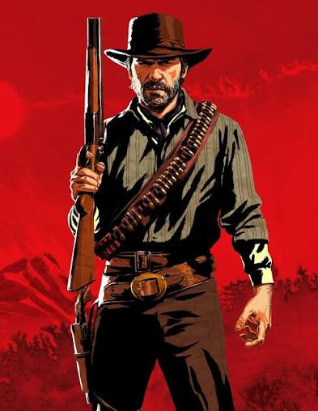

Arthur morgan is the main character for the game Red Dead Redemption 2
Arthur Morgan is a loyal Wild West outlaw whose world shatters after a terminal tuberculosis diagnosis. Realising his time is short and his gang leader has gone mad, he spends his final days defying his old life to save his friend John Marston’s family.
